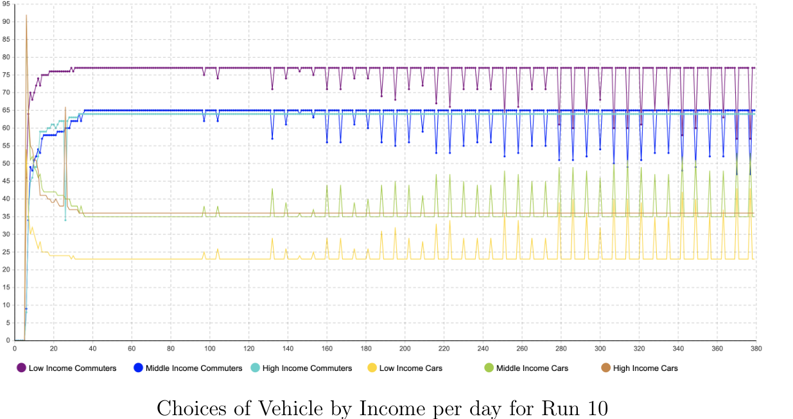

Overview
For our fourth-year MATH*4440 research project, our three-person team investigated how public transit policies could affect commuting decisions. We built an agent-based simulation in AnyLogic representing commuters travelling from Hamilton, Ontario, to Union Station in Toronto.
The study focused on whether individual choices—and differences in the relative importance of cost, commuting time, and satisfaction—could generate changes in transit adoption across a simulated population.
Methods & policy experiments
The simulation contains 100 agents in each of three income cohorts. Each agent evaluates travel cost, time, and satisfaction, with preferences and the effect of past choices varying by income group. The research draws on published transit data, census information, and a survey of 175 respondents to inform policy design.
We compared a no-policy baseline against three interventions:
- Policy 1 — Greater bus frequency: reduce scheduled intervals between buses.
- Policy 2 — Frequent-rider discounts: lower fares after a commuter reaches specified trip thresholds.
- Policy 3 — Combined intervention: introduce both faster service and discounted fares.
Four experiment conditions were each simulated over 365 days, with ten runs per condition to compare the average share of public transit users on the final day.
What the simulations found
We expected the combined intervention to produce the highest transit adoption. Instead, the model produced an unexpected pattern: the baseline outperformed each policy among low- and middle-income agents, while greater bus frequency led to the highest uptake among high-income agents.
| Income group | No policy | Policy 1 | Policy 2 | Policy 3 |
|---|---|---|---|---|
| Low | 85.8% | 82.4% | 85.6% | 83.1% |
| Middle | 64.9% | 63.6% | 62.8% | 63.2% |
| High | 63.3% | 69.1% | 64.8% | 65.9% |

What we learned
The results encouraged us to question the model rather than treat its outputs as definitive policy recommendations. Our report discusses how the decision function, memory assumptions, and simplified environment could explain results that departed from our hypotheses. This project was valuable experience in collaborative modelling, experimental design, analysing unexpected outcomes, and identifying limitations.
Read the team report
Read the complete research report, including methods, simulation results and future work. This public-facing PDF has been anonymized to remove contributors' names and student ID numbers.
Project team: Luke May and two collaborators (names withheld) · University of Guelph · April 2023. Collaborative undergraduate team project. The public-facing PDF has been anonymized; the original academic document has not been changed.